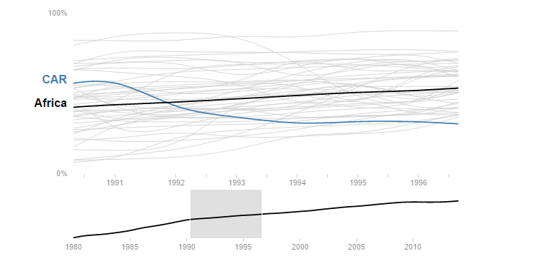
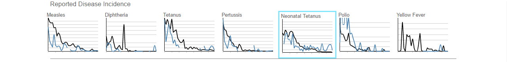
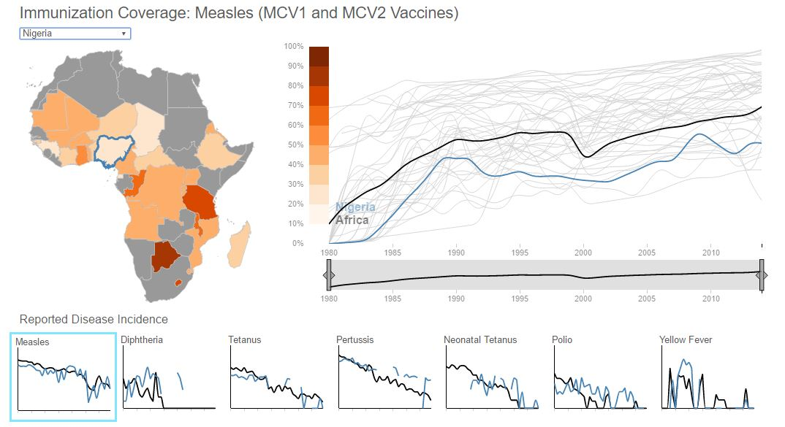
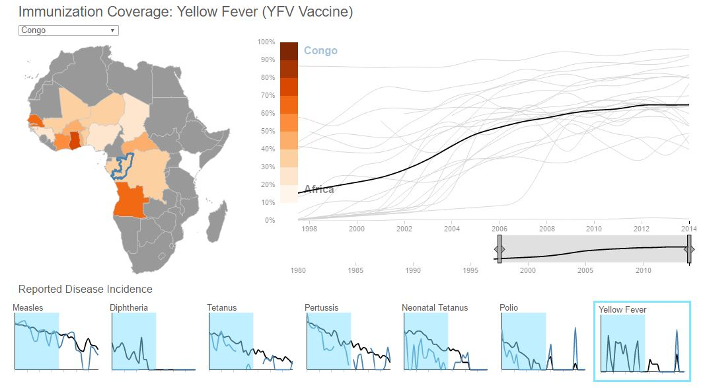

Reported Disease Incidence
Measles
Diphtheria
Tetanus
Pertussis
Neonatal Tetanus
Polio
Yellow Fever
Visualization Instructions
To start using this visualization, click on the "Go to Visualization" tab above and select one of buttons for disease type.
Or to learn more, please hover over each section of the image below to learn more about our dashboard.


Welcome to our Visualization!
Hover over each section to the right to learn more about our dashboard.
Visualizing Immunization Effectiveness in Africa
Are immunizations effective?
Section to be completed with use case from visualization.
Which countries need more international aid for health programs?
Section to be completed with use case from visualization.

Which diseases require renewed focus to combat?
Section to be completed with use case from visualization.

Meet The Team

Daniel
MIDS Student
Jaime
MIDS Student
Al
MIDS Student